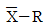
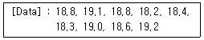
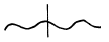
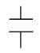
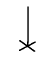

철도차량정비기능장 (2003-07-20 기출문제)
1과목: 임의 구분
1. 어떤 측정법으로 동일 시료를 무한 횟수 측정하였을 때 데이터의 분포의 평균치와 참값과의 차를 무엇이라 하는가?
- 신뢰성
- 정확성
- 정밀도
- 오차
(정답률: 97%)

2. 예방보전의 기능에 해당하지 않는 것은?
- 취급되어야 할 대상설비의 결정
- 정비작업에서 점검시기의 결정
- 대상설비 점검개소의 결정
- 대상설비의 외주이용도 결정
(정답률: 97%)
3. 관리한계선을 구하는데 이항분포를 이용하여 관리선을 구하는 관리도는?
- Pn 관리도
- U 관리도

관리도- X 관리도
(정답률: 84%)
4. 로트(Lot)수를 가장 올바르게 정의한 것은?
- 1회 생산수량을 의미한다.
- 일정한 제조회수를 표시하는 개념이다.
- 생산목표량을 기계대수로 나눈 것이다.
- 생산목표량을 공정수로 나눈 것이다.
(정답률: 88%)
5. 다음의 데이터를 보고 편차 제곱합(S)을 구하면? (단, 소숫점 3자리까지 구하시오.)

- 0.338
- 1.029
- 0.114
- 1.014
(정답률: 84%)
6. 공정 도시기호중 공정계열의 일부를 생략할 경우에 사용되는 보조 도시기호는?



(정답률: 93%)
7. 전기기관차에 사용되는 접촉기 중 전공접촉기가 아닌 것은?
- 동력 접촉기
- 약계자 접촉기
- 발전제동 여자 접촉기
- 열차 난방 접촉기
(정답률: 91%)
8. 인버터제어 전동차에서 단류기함의 시험항목이 아닌 것은?
- 외관, 구조 검사
- 절연내력시험
- 진동시험
- 내구성시험
(정답률: 83%)
9. 디젤전기기관차의 직류 주발전기에서 공통으로 갖고 있지 않는 계자는?
- 축전지 계자
- 분권 계자
- 정류 계자
- 보상 계자
(정답률: 84%)
10. 다음은 전기기관차 주정류기 설명이다. 틀린 것은?
- 구형 주정류기 사이리스터는 2직 9병렬로 구성되어 1량당 72개이다.
- 신형 주정류기 사이리스터는 2직 3병렬로 구성되어 1량당 24개이다.
- 구형 주정류기 다이오드는 2직 9병렬로 구성되어 1량당 72개이다.
- 신형 주정류기 다이오드는 2직 3병렬로 구성되어 1량당 24개이다.
(정답률: 88%)
11. 인버터제어 전동차 모진보호 변류기의 점검개소 및 기준의 연결이 틀린 것은?
- 탱크 : 손상여부
- Bushing부 : 손상 및 오염여부
- 전기저항측정 : 100 VMega로 100 MΩ 이상
- 절연내력측정 : AC 5400 V 1분간
(정답률: 90%)
12. 인버터제어 전동차 방송장치에 대한 설명중 옳지 않은 것은?
- 제어증폭기(Center and side Operation Box)
- 출력증폭기(Power Amplifier)
- 자동안내 방송기(IC 음성합성 재생기)
- 전원장치(T Car 출력증력증폭기에 내장)
(정답률: 90%)
13. VVVF차의 자동 방송장치의 입력 전압은?
- AC 100 V
- DC 100 V
- AC 200 V
- DC 200 V
(정답률: 97%)
14. 도시철도 7, 8호선 정지형인버터(SIV:Static Inverter)필터장치의 역할을 설명한 것은?
- 입력전원 및 SIV에서 발생하는 립플전류를 감쇄시켜 고조파전류를 억제하여 통신 및 신호설비에 대한 유도장애방지한다.
- 출력전압을 안정화하기 위한 것이다.
- 출력전원 및 SIV에서 발생하는 리플전압을 감쇄시켜 타 기기를 보호하기 위한 것이다.
- 충돌적인 가선전압으로부터 기기를 보호하기 위한 것이다.
(정답률: 100%)
15. 디젤전기기관차에서 기관의 회전수가 900 rpm, 극수가 12일 때 주파수는 몇 Hz 인가?
- 60
- 90
- 110
- 130
(정답률: 90%)
16. 전기차량에서 판토그래프의 성능검사 항목과 관계 없는것은?
- 상승시간은 10 ~ 14 s 범위로 한다.
- 하강시간은 4 ~ 6 s 범위로 한다.
- 공기누설검사는 압축공기를 공급한 후 누설량이 0.2㎏f/cm2이내라야 한다.
- 최저 공기압력을 4 ㎏f/cm2의 압축공기로 완전상승을 확인한다.
(정답률: 79%)
17. ATP 시스템의 하부기능이 아닌 것은?
- 스케줄 제어
- 자동속도 명령
- 열차검지
- 연동장치
(정답률: 97%)
18. 전기동차에서 TCMS 시스템이 제어하는 서브시스템이 아닌 것은?
- 저압 신호
- 추진 시스템
- 제동과 공기압축기
- 신호 장치
(정답률: 76%)
19. ERE 제동장치의 중계변 하부 절환 피스톤실에 공기유입시 얼마의 감압효과가 있는가?
- 5%
- 10%
- 15%
- 20%
(정답률: 83%)
20. 전기기관차의 비상공기통 압력부족과 관계 없는 것은?
- DJ
- QPDJ
- PT
- CTF
(정답률: 94%)
2과목: 임의 구분
21. 공기제동기 중 화차에 사용하고 있는 것은?
- LN형
- AV형
- U형
- K형
(정답률: 90%)
22. 전기제동과 공기제동이 있는 기관차에서 제동순서는?
- 전기제동 우선
- 공기제동 우선
- 전기제동과 공기제동 동시에
- 전기제동과 주차제동 동시에
(정답률: 97%)
23. 새마을동차에서 같은 CV압력이 작용시에 공기제동이 우선하는 이유는?
- 분배변 압력쪽의 작용 실린더 단면적이 크다.
- 분배변 압력에 스프링 장력이 더해진다.
- EP벨브 CV압력을 감압하는 장치가 있다.
- 분배변 CV압력을 증압하는 장치가 있다.
(정답률: 85%)
24. 교·직류형 전기동차의 SELD형 제동장치에 대한 특성 및 성능에 대한 설명으로 틀린 것은?
- 전자직통 제동으로 제동 및 완해작용이 동기적이고 공주시기가 짧다.
- 발전제동 작용중(MM'차) 전자직통제동은 억제된다.
- 발전제동작용 불능시 전자직통제동으로 전환된다.
- 전자직통제동작용중 자동 비상제동이 작용시는 제동력이 작은쪽으로 자동절환된다.
(정답률: 91%)
25. 제륜자와 차륜간의 마찰계수의 조건변화에 대한 설명으로 틀린 것은?
- 마찰계수는 속도증가에 따라 커진다.
- 마찰계수는 온도상승에 따라 작아진다.
- 마찰계수는 제륜자 압력증가에 따라 작아진다.
- 마찰계수는 재질 및 기후에 따라 변화한다.
(정답률: 85%)
26. 전기제동의 현상으로 분류되는 제동은?
- 보안제동
- 정차제동
- 회생제동
- 주차제동
(정답률: 97%)
27. 전동차 MBS-D2형 제동장치의 발전제동에 대한 설명이 아닌 것은?
- 발전제동시에 주전동기는 직권발전기로 회로가 구성된다.
- 직권발전기에서 생성된 전력은 주저항기에서 열로 소비한다.
- 직권발전기의 연결은 8개의 직렬로 연결된다.
- 기압저항기에 의하여 공기제동력에 비례하는 발전제동력을 얻게 된다.
(정답률: 88%)
28. 도시철도 5호선에 적용된 정차제동에 대한 설명이 아닌 것은?
- 운행중인 열차가 정차시 후진을 방지하기 위하여 제동변에 의한 추가제동없이 작용한다.
- 정차제동력은 상용전제동의 70%정도의 제동력을 자동으로 체결한다.
- 정차제동시에는 마스콘에 의한 70%이하의 상용제동은 작용하지 않지만 비상제동은 체결된다.
- 정차제동은 자동운전모드에서만 작동된다.
(정답률: 98%)
29. 디젤기관차용 LTZ-3H형 제습기의 공기소모량으로 맞는 것은?
- 압축공기 생성량의 약 10% 정도
- 압축공기 생성량의 약 15% 정도
- 압축공기 생성량의 약 20% 정도
- 압축공기 생성량의 약 25% 정도
(정답률: 90%)
30. 화차의 길이가 18 m인 경우 차장율은?
- 1.4
- 1.38
- 1.50
- 1.3
(정답률: 94%)
31. 객차 연결완충장치에 사용되는 고무완충기의 특성과 거리가 먼 것은?
- 재질이나 형상에 따라 특성을 다양하게 할 수 있다.
- 마모가 적고 가격이 비싸다.
- 내충격성이 있다.
- 강도 및 내구성이 있다.
(정답률: 100%)
32. 객차 차륜 마모 한계 직경은?
- 776 mm
- 800 mm
- 820 mm
- 840 mm
(정답률: 97%)
33. 스너버 스프링에 대한 설명중 맞는 것은?
- MAN 대차용 1차감쇠 스프링 이다.
- 화차에 사용되고 있으며 충격흡수 및 진동감쇠용 스프링이다.
- 소시미 대차에 사용된는 공기 스프링 이다.
- C-1 대차와 후릭숀블록을 말한다.
(정답률: 86%)
34. 대차의 공기 스프링 방식 2차 현수장치에서 두개의 공기스프링(에어백) 사이에 설치되어 두 공기 스프링간의 압력차이가 설정치 이상 발생할 경우 동작하여 두 공기 스프링의 높이를 일정하게 유지하는 것은?
- 보정밸브
- 공기스프링
- 높이조정로드
- 자동높이조정변
(정답률: 93%)
35. 0℃의 물 1000kg을 24시간에 0℃의 얼음으로 만드는데 필요한 냉동능력을 1 일본 냉동톤이라 한다. 열량으로는 몇 Kcal인가?
- 2400
- 3024
- 3320
- 3820
(정답률: 80%)
36. VVVF 인버터 차량의 data 공유를 위한 통신라인은?
- RS-482
- RS-485
- RS-422
- RS-425
(정답률: 94%)
37. 도시철도 6호선용 자동방송장치와 열차제어감시장치(TCMS)간의 역간거리 데이터값은 몇 m를 기준으로 사용하는가?
- 20 m
- 25 m
- 30 m
- 50 m
(정답률: 95%)
38. 8000 대형 전기기관차 주행장치의 2차 받침장치에 대한 설명 중 바르지 못한 것은?
- 전대차는 고무부록으로 되어 있다.
- 후대차는 고무부록으로 되어 있다.
- 중간대차는 스프링 및 로울러박스로 구성되어 있다.
- 에라스틱베어링은 중간대차에 설치되어 있다.
(정답률: 97%)
39. 다음중 여객의 쾌적한 여행을 위한 차량조명의 특징과 거리가 먼 것은?
- 차내 전체에 균등한 조명이라야 한다.
- 정차장의 조명과 서로 맞아야 한다.
- 등구는 차실내 의장과 서로 조화되어야 한다.
- 조명방식은 직접조명이어야 한다.
(정답률: 97%)
40. 객차에서 승강대 자동문의 주요 구성품으로 틀린 것은?
- 도어 엔진
- 망원경식 베어링
- 잠금 장치
- 발판
(정답률: 97%)
3과목: 임의 구분
41. 다음 중 전차제동율이란?
- 제륜자 압력과 전차륜의 중량과의 비
- 제륜자 총압력과 전차량 중량과의 비
- 제륜자 압력과 제동축과의 축중비
- 제륜자 총압력과 제동통 압력과의 비
(정답률: 84%)
42. 다음 차륜답면의 기하학적 형상에 따라 정해지는 윤축의 사행동 파장과 가장 관계가 없는 것은?
- 차륜 직경
- 차륜 답면의 구배
- 좌우 차륜의 거리
- 차륜 속도
(정답률: 66%)
43. 다음 차체 상하 진동중 동요의 경감책에 대한 내용과 관련이 적은 것은?
- 대차의 스프링을 유연하게 할 것
- 장대의 중량레일을 사용할 것
- 판 스프링 대신 코일스프링과 오일댐퍼를 사용할 것
- 스윙볼스터의 행거를 길게할 것
(정답률: 97%)
44. 디젤기관에서 사용하는 피스톤에 대한 설명중 거리가 먼 것은?
- 고온에서 충분한 강도를 가질 것
- 고온에서 열전도가 양호할 것
- 고온에서 열팽창계수가 가능한 클 것
- 가볍고 내열성이 클 것
(정답률: 80%)
45. 미기압파의 크기가 출구 압력파의 구배와 관계식이 맞는 것은?
- 반비례한다.
- 관계가 없다.
- 정비례한다.
- 약 3배 이다.
(정답률: 83%)
46. 국내 도시철도의 최고 속도는?
- 80km/h
- 90km/h
- 110km/h
- 150km/h
(정답률: 97%)
47. 동력전달 손실율이 맞는 것은?
- 약3%
- 약5%
- 약10%
- 약15%
(정답률: 76%)
48. 열차운행중 발생하는 저항에 대한 설명으로 틀린 것은?
- 열차가 고속으로 운행하더라도 주행저항은 변화가 없다.
- 출발저항은 발차후 속도향상과함께 급격히 감소 한다.
- 곡선저항은 곡선반경에 반비례 한다.
- 구배저항은 열차의 중량과 구배에 비례하여 증감 한다.
(정답률: 97%)
49. 직류직권전동기의 회전력과 회전수의 관계가 아닌 것은?
- 회전수는 역기전력에 비례하고 자력선에 반비례한다.
- 전동기가 일정단자전압으로 회전하고 있을때는 회전수가 높은만큼 역기전력이 작아져 부하전류는 감소 한다.
- 정격회전력은 정격전류에 의한 전동기의 회전력으로서 전계자 약계자의 구별이 있다.
- 출력은 회전력과 회전수의 곱에 비례한다.
(정답률: 66%)
50. 신교통시스템(LIM 방식)에 대한 설명이 아닌 것은?
- 고무타이어식에 비해 건설비가 절감된다.
- 전력 소모량이 적다.
- 운행시 소음이 적다.
- 급곡선 주행에 유리하다.
(정답률: 80%)
51. 디젤기관에서 실린더 배기량이 2700cc, 연소실 체적이 200cc이다. 이 기관의 압축비는?
- 14.5 : 1
- 16 : 1
- 10.5 : 1
- 12 : 1
(정답률: 91%)
52. 디젤전기기관에서 기관의 윤활계통에 들어가는 윤활유의 최고 압력을 제한하기 위한 것은?
- 피이 파이프
- 피스톤 냉각유관
- 윤활유 압력 완해변
- 유분리기
(정답률: 97%)
53. 디젤기관의 가솔린기관에 대한 단점이다. 틀린 것은?
- 동일체적의 실린더로는 가솔린 기관에 비해 마력이 떨어진다.
- 마력당의 중량, 체적이 크다.
- 일반적으로 최고압력은 높지만 평균압력은 낮다.
- 연료 분사식이므로 연료 소비량이 크다.
(정답률: 81%)
54. 디젤전기기관차 조속기의 기관정지 조정은 최저회전(정상유전 또는 저유전)에서 속도 셋팅 피스톤 연장부와 연료 제한 너트와의 간격을 얼마로 조정하여야 하는가?
- 1/16"
- 1/32"
- 3/32"
- 5/16"
(정답률: 93%)
55. 7000대 디젤전기기관차 동력전달 장치의 치차함 보수방법 중 가장 알맞는 것은?
- 용접부위는 육안으로 확인
- 신너로 그리스, 먼지 제거
- 화염으로 그리스, 먼지 제거
- 휄트는 윤활유에 충분히 적신후 리테이너에 접히는 부위가 없도록 두드리며 삽입
(정답률: 97%)
56. 디젤기관의 연소실에 해당되지 않는 것은?
- 진공실실
- 직접분사식
- 와류실식
- 예연소실식
(정답률: 82%)
57. 디젤전기기관차에서 견인전동기, 전기제어 분전함, 발전기 등의 냉각에 필요한 공기 및 기관 흡입공기를 공급하기 위한 계통은?
- 격자 냉각계통
- 발전 제동계통
- 기관 냉각계동
- 중앙 공기계통
(정답률: 80%)
58. 디젤전기기관차 터보차저 쇽크백 계통의 유압이 몇 PSI 도달하면 완해변이 동작 하는가?
- 55
- 65
- 75
- 85
(정답률: 79%)
59. 디젤전기기관차의 저수위 탐지장치에서 정상시 냉각수압력과 대항되어 균형위치를 취하고 있는 것은?
- 기관공기함의 공기압력
- 스프링장력+유조압력
- 기관공기함의 공기압력+스프링장력
- 기관공기함의 공기압력+냉각수압력
(정답률: 90%)
60. 디젤전기기관차의 과속방지장치(Overspeed Trip Mechanism)의 동작에 대한 설명이 아닌 것은?
- 규정된 회전수를 초과하면 플라이 웨이트는 원심력에 의하여 작동스프링장력을 이겨 외방으로 탈출한다.
- 플라이웨이트가 탈출되어 트립 레버(Trip Lever) 에 접촉되면 트립 레버가 밖으로 밀려나와 복귀레버 암축의 거리쇠를 벗겨 트립캠축을 회전시킨다.
- 메인캠이 로커암의 종동 로울러와 닿지 않으면 연료 분사는 정상적으로 이루어지는 상태이다.
- 트립캠축이 회전하면 헤드에 장치된 캐치파울을 밀고 캐치파울은 분사변 로커암의 밑을 받혀 분사위치를 취하게 한다.
(정답률: 64%)